산업안전산업기사 (2019-03-03 기출문제)
1과목: 산업안전관리론
1. 하인리히의 재해구성비율에 따라 경상사고가 87건 발생하였다면 무상해사고는 몇 건이 발생하였겠는가?
- 300건
- 600건
- 900건
- 1200건
(정답률: 80%)

2. OJT(On the Job Training)의 특징이 아닌 것은?
- 훈련에 필요한 업무의 계속성이 끊어지지 않는다.
- 교육효과가 업무에 신속히 반영된다.
- 다수의 근로자들을 대상으로 동시에 조직적 훈련이 가능하다.
- 개개인에게 적절한 지도훈련이 가능하다.
(정답률: 84%)
3. 재해사례연구에 관한 설명으로 틀린 것은?
- 재해사례연구는 주관적이며 정확성이 있어야 한다.
- 문제점과 재해요인의 분석은 과학적이고, 신뢰성이 있어야 한다.
- 재해사례를 과제로 하여 그 사고와 배경을 체계적으로 파악한다.
- 재해요인을 규명하여 분석하고 그에 대한 대책을 세운다.
(정답률: 89%)
4. 산업안전보건법상 안전ㆍ보건 표지에서 기본모형의 색상이 빨강이 아닌 것은?
- 산화성물질 경고
- 화기금지
- 탑승금지
- 고온 경고
(정답률: 66%)
5. 모랄 서베이(Morale Survey)의 효용이 아닌 것은?
- 조직 또는 구성원의 성과를 비교ㆍ분석한다.
- 종업원의 정화(Catharsis)작용을 촉진시킨다.
- 경영관리를 개선하는 데에 대한 자료를 얻는다.
- 근로자의 심리 또는 욕구를 파악하여 불만을 해소하고, 노동의욕을 높인다.
(정답률: 73%)
6. 주의(Attention)의 특징 중 여러 종류의 자극을 자각할 때, 소수의 특정한 것에 한하여 주의가 집중되는 것은?
- 선택성
- 방향성
- 변동성
- 검출성
(정답률: 83%)
7. 인간의 적응기제(適機應制)에 포함되지 않는 것은?
- 갈등(conflict)
- 억압(repression)
- 공격(aggression)
- 합리화(rationalization)
(정답률: 52%)
8. 산업안전보건법상 직업병 유소견자가 발생하거나 다수 발생할 우려가 있는 경우에 실시하는 건강진단은?
- 특별 건강진단
- 일반 건강진단
- 임시 건강진단
- 채용시 건강진단
(정답률: 57%)
9. 위험예지훈련 중 TBM(Tool Box Meeting)에 관한 설명으로 틀린 것은?
- 작업 장소에서 원형의 형태를 만들어 실시한다.
- 통상 작업시작 전ㆍ후 10분 정도 시간으로 미팅한다.
- 토의는 다수인(30인)이 함께 수행한다.
- 근로자 모두가 말하고 스스로 생각하고 “이렇게 하자”라고 합의한 내용이 되어야 한다.
(정답률: 86%)
10. 제조업자는 제조물의 결함으로 인하여 생명ㆍ신체 또는 재산에 손해를 입은 자에게 그 손해를 배상하여야 하는데 이를 무엇이라 하는가? (단, 당해 제조물에 대해서만 발생한 손해는 제외한다.)
- 입증 책임
- 담보 책임
- 연대 책임
- 제조물 책임
(정답률: 85%)
11. 하버드 학파의 5단계 교수법에 해당되지 않는 것은?
- 교시(Presentation)
- 연합(Association)
- 추론(Reasoning)
- 총괄(Generalization)
(정답률: 79%)
12. 객관적인 위험을 자기 나름대로 판정해서 의지결정을 하고 행동에 옳기는 인간의 심리특성은?
- 세이프 테이킹(safe taking)
- 액션 테이킹(action taking)
- 리스크 테이킹(risk taking)
- 휴먼 테이킹(human taking)
(정답률: 73%)
13. 재해예방의 4원칙에 해당하지 않는 것은?
- 예방 가능의 원칙
- 손실 우연의 원칙
- 원인 계기의 원칙
- 선취 해결의 원칙
(정답률: 80%)
14. 방독마스크의 정화통 색상으로 틀린 것은?
- 유기화합물용-갈색
- 할로겐용-회색
- 황화수소용-회색
- 암모니아용-노란색
(정답률: 66%)
15. 다음 중 스트레스(Stress)에 관한 설명으로 가장 적절한 것은?
- 스트레스는 나쁜 일에서만 발생한다.
- 스트레스는 부정적인 측면만 가지고 있다.
- 스트레스는 직무몰입과 생산성 감소의 직접적인 원인이 된다.
- 스트레스 상황에 직면하는 기회가 많을수록 스트레스 발생 가능성은 낮아진다.
(정답률: 82%)
16. 누전차단장치 등과 같은 안전장치를 정해진 순서에 따라 작동시키고 동작상황의 양부를 확인하는 점검은?
- 외관점검
- 작동점검
- 기술점검
- 종합점검
(정답률: 87%)
17. 재해발생 형태별 분류 중 물건이 주체가 되어 사람이 상해를 입는 경우에 해당되는 것은?
- 추락
- 전도
- 충돌
- 낙하ㆍ비래
(정답률: 78%)
18. 산업안전보건법령상 특별안전ㆍ보건 교육의 대상 작업에 해당하지 않는 것은?
- 석면해체ㆍ제거작업
- 밀폐된 장소에서 하는 용접작업
- 화학설비 취급품의 검수ㆍ확인 작업
- 2m 이상의 콘크리트 인공구조물의 해체 작업
(정답률: 66%)
19. 안전을 위한 동기부여로 틀린 것은?
- 기능을 숙달시킨다.
- 경쟁과 협동을 유도한다.
- 상벌제도를 합리적으로 시행한다.
- 안전목표를 명확히 설정하여 주지시킨다.
(정답률: 62%)
20. 안전교육의 3단계에서 생활지도, 작업동작지도 등을 통한 안전의 습관화를 위한 교육은?
- 지식교육
- 기능교육
- 태도교육
- 인성교육
(정답률: 79%)
2과목: 인간공학 및 시스템안전공학
21. 인간-기계시스템에 대한 평가에서 평가척도나 기준(criteria)으로서 관심의 대상이 되는 변수는?
- 독립변수
- 종속변수
- 확률변수
- 통제변수
(정답률: 69%)
22. 화학설비의 안전성 평가 과정에서 제 3단계인 정량적 평가 항목에 해당되는 것은?
- 목록
- 공정계통도
- 화학설비용량
- 건조물의 도면
(정답률: 82%)
23. 다음 FTA 그림에서 a, b, c의 부품고장률이 각각 0.01일 때, 최소 컷셋(minimal cut sets)과 신뢰도로 옳은 것은?
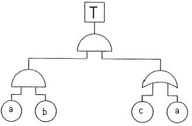
- {a, b}, R(t)=99.99%
- {a, b, c}, R(t)=98.99%
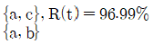
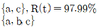
(정답률: 64%)
24. FT도에 사용되는 기호 중 입력신호가 생긴 후, 일정시간이 지속된 후에 출력이 생기는 것을 나타내는 것은?
- OR 게이트
- 위험 지속 기호
- 억제 게이트
- 배타적 OR 게이트
(정답률: 65%)
25. 자동차나 항공기의 앞유리 혹인 차양판 등에 정보를 중첩 투사하는 표시장치는?
- CRT
- LCD
- HUD
- LED
(정답률: 83%)
26. 암호체계 사용상의 일반적인 지침에 해당하지 않는 것은?
- 암호의 검출성
- 부호의 양립성
- 암호의 표준화
- 암호의 단일 차원화
(정답률: 68%)
27. 일반적인 수공구의 설계원칙으로 볼 수 없는 것은?
- 손목을 곧게 유지한다.
- 반복적인 손가락 동작을 피한다.
- 사용이 용이한 검지만 주로 사용한다.
- 손잡이는 접촉면적을 가능하면 크게 한다.
(정답률: 85%)
28. 광원으로부터의 직사 휘광을 줄이기 위한 방법으로 적절하지 않은 것은?
- 휘광원, 주위를 어둡게 한다.
- 가리개, 갓, 차양 등을 사용한다.
- 광원을 시선에서 멀리 위치시킨다.
- 광원의 수는 늘리고 휘도는 줄인다.
(정답률: 69%)
29. 신뢰성과 보전성을 효과적으로 개선하기 위해 작성하는 보전기록 자료로서 가장 거리가 먼 것은?
- 자재관리표
- MTBF 분석표
- 설비이력카드
- 고장원인대책표
(정답률: 74%)
30. 통제표시비(control/display ratio)를 설계할 때 고려하는 요소에 관한 설명으로 틀린 것은?
- 통제표시비가 낮다는 것은 민감한 장치하는 것을 의미한다.
- 목(시거리(目示距離)가 길면 길수록 조절의 정확도는 떨어진다.
- 짧은 주행 시간 내에 공차의 인정범위를 초과하지 않는 계기를 마련한다.
- 계기의 조절시간이 짧게 소요되도록 계기의 크기(size)는 항상 작게 설계한다.
(정답률: 82%)
31. 다음 중 연마작업장의 가장 소극적인 소음대책은?
- 음향 처리제를 사용할 것
- 방음 보호 용구를 착용할 것
- 덮개를 씌우거나 창문을 닫을 것
- 소음원으로부터 적절하게 배치할 것
(정답률: 70%)
32. 다음의 설명에서 ()안의 내용을 맞게 나열한 것은?
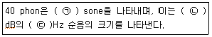
- ㉠ 1, ㉡ 40, ㉢ 1000
- ㉠ 1, ㉡ 32, ㉢ 1000
- ㉠ 2, ㉡ 40, ㉢ 2000
- ㉠ 2, ㉡ 32, ㉢ 2000
(정답률: 72%)
33. 위험조정을 위해 필요한 기술은 조직형태에 따라 다양하며, 4가지로 분류하였을 때 이에 속하지 않는 것은?
- 전가(transfer)
- 보류(retention)
- 계속(continuation)
- 감축(reduction)
(정답률: 63%)
34. 체내에서 유기물을 합성하거나 분해하는 데는 반드시 에너지의 전환이 뒤따른다. 이것을 무엇이라 하는가?
- 에너지 변환
- 에너지 합성
- 에너지 대사
- 에너지 소비
(정답률: 72%)
35. 전통적인 인간-기계(Man-Machine) 체계의 대표적 유형과 거리가 먼 것은?
- 수동체계
- 기계화체계
- 자동체계
- 인공지능체계
(정답률: 73%)
36. 다음 그림 중 형상 암호화된 조종 장치에서 단회전용 조종 장치로 가장 적절한 것은?
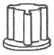
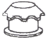
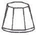
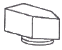
(정답률: 64%)
37. 작업장에서 구성요소를 배치하는 인간공학적 원칙과 가장 거리가 먼 것은?
- 중요도의 원칙
- 선입선출의 원칙
- 기능성의 원칙
- 사용빈도의 원칙
(정답률: 79%)
38. 동전던지기에서 앞면이 나올 확률 P(앞)=0.6이고, 뒷면이 나올 확률 P(뒤)=0.4일 때, 앞면과 뒷면이 나올 사건의 정보량을 각각 맞게 나타낸 것은?
- 앞면:0.10bit, 뒷면:1.00bit
- 앞면:0.74bit, 뒷면:1.32bit
- 앞면:1.32bit, 뒷면:0.74bit
- 앞면:2.00bit, 뒷면:1.00bit
(정답률: 64%)
39. 어떤 결함수의 쌍대결함수를 구하고, 컷셋을 찾아내어 결함(사고)을 예방할 수 있는 최소의 조합을 의미하는 것은?
- 최대 컷셋
- 최소 컷셋
- 최대 패스셋
- 최소 패스셋
(정답률: 59%)
40. 인간-기계 시스템에서의 신뢰도 유지 방안으로 가장 거리가 먼 것은?
- lock system
- fail-safe system
- fool-proof system
- risk assessment system
(정답률: 65%)
3과목: 기계위험방지기술
41. 금형 조정 작업 시 슬라이드가 갑자기 작동하는 것으로부터 근로자를 보호하기 위하여 가장 필요한 안전장치는?
- 안전블록
- 클러치
- 안전 1행정 스위치
- 광전자식 방호장치
(정답률: 83%)
42. 프레스 작업 중 작업자의 신체일부가 위험한 작업점으로 들어가면 자동적으로 정지되는 기능이 있는데, 이러한 안전 대책을 무엇이라고 하는가?
- 풀 프루프(fool proof)
- 페일 세이프(fail safe)
- 인터록(inter lock)
- 리미트 스위치(limit switch)
(정답률: 58%)
43. 다음 중 취급운반 시 준수해야 할 원칙으로 틀린 것은?
- 연속 운반으로 할 것
- 직선 운반으로 할 것
- 운반 작업을 집중화시킬 것
- 생산을 최소로 하도록 운반할 것
(정답률: 77%)
44. 프레스기에 사용하는 양수조작식 방호장치의 일반구조에 관한 설명 중 틀린 것은?
- 1행정 1정지 기구에 사용할 수 있어야 한다.
- 누름버튼을 양 손으로 동시에 조작하지 않으면 작동시킬 수 없는 구조이어야 한다.
- 양쪽버튼의 작동시간 차이는 최대 0.5초 이내일 때 프레스가 동작되도록 해야 한다.
- 방호장치는 사용전원전압의 ±50%의 변동에 대하여 정상적으로 작동되어야 한다.
(정답률: 70%)
45. 피복 아크 용접 작업 시 생기는 결함에 대한 설명 중 틀린 것은?
- 스패터(spatter):용융된 금속의 작은 입자가 튀어나와 모재에 묻어있는 것
- 언더컷(under cut):전류가 과대하고 용접속도가 너무 빠르며, 아크를 짧게 유지하기 어려운 경우 모재 및 용접부의 일부가 녹아서 발생하는 홈 또는 오목하게 생긴 부분
- 크레이터(crater):용착금속 속에 남아있는 가스로 인하여 생긴 구멍
- 오버랩(overlap):용접봉의 운행이 불량하거나 용접봉의 용융 온도가 모재보다 낮을 때 과잉 용착금속이 남아있는 부분
(정답률: 61%)
46. 다음 중 선반(lathe)의 방호장치에 해당하는 것은?
- 슬라이드(slide)
- 심암대(tail stock)
- 주축대(head stock)
- 척 가드(chuck guard)
(정답률: 70%)
47. 안전계수 5인 로프의 절단하중이 4000N 이라면 이 로프는 몇 N이하의 하중을 매달아야 하는가?
- 500
- 800
- 1000
- 1600
(정답률: 84%)
48. 산업안전보건법령에 따라 아세틸렌 발생기실에 설치해야 할 배기통은 얼마 이상의 단면적을 가져야 하는가?
- 바닥면적의 1/16
- 바닥면적의 1/20
- 바닥면적의 1/24
- 바닥면적의 1/30
(정답률: 66%)
49. 롤러기에서 앞면 롤러의 지름이 200mm, 회전속도가 30rpm인 롤러의 무부하 동작에서의 급정지거리로 옳은 것은?
- 66 mm 이내
- 84 mm 이내
- 209 mm 이내
- 248 mm 이내
(정답률: 47%)
50. 정(chisel) 작업의 일반적인 안전수칙으로 틀린 것은?
- 따내기 및 칩이 튀는 가공에서는 보안경을 착용하여야 한다.
- 절단 작업 시 절단된 끝이 튀는 것을 조심하여야 한다.
- 작업을 시작할 때는 가급적 정을 세게 타격하고 점차 힘을 줄여간다.
- 담금질 된 철강 재료는 정 가공을 하지 않는 것이 좋다.
(정답률: 81%)
51. 다음과 같은 작업조건일 경우 와이어로프의 안전율은?
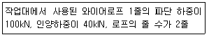
- 2
- 2.5
- 4
- 5
(정답률: 62%)
52. 컨베이어 역전방지장치의 형식 중 전기식 장치에 해당하는 것은?
- 라쳇 브레이크
- 밴드 브레이크
- 롤러 브레이크
- 슬러스트 브레이크
(정답률: 59%)
53. 공장설비의 배치 계획에서 고려할 사항이 아닌 것은?
- 작업의 흐름에 따라 기계 배치
- 기계설비의 주변 공간 최소화
- 공장 내 안전통로 설정
- 기계설비의 보수점검 용이성을 고려한 배치
(정답률: 77%)
54. 다음 중 기계설비에 의해 형성되는 위험점이 아닌 것은?
- 회전 말림점
- 접선 분리점
- 협착점
- 끼임점
(정답률: 77%)
55. 가스 용접에서 역화의 원인으로 볼 수 없는 것은?
- 토치 성능이 부실한 경우
- 취관이 작업 소재에 너무 가까이 있는 경우
- 산소 공급량이 부족한 경우
- 토치 팁에 이물질이 묻은 경우
(정답률: 78%)
56. 위험기계에 조작자의 신체부위가 의도적으로 위험점밖에 있도록 하는 방호장치는?
- 덮개형 방호장치
- 차단형 방호장치
- 위치제한형 방호장치
- 접근반응형 방호장치
(정답률: 67%)
57. 선반 작업에 대한 안전수칙으로 틀린 것은?
- 척 핸들을 항상 척에 끼워 둔다.
- 배드 위에 공구를 올려놓지 않아야 한다.
- 바이트를 교환할 때는 기계를 정지시키고 한다.
- 일감의 길이가 외경과 비교하여 매우 길 때는 방진구를 사용한다.
(정답률: 80%)
58. 양중기에 사용 가능한 와이어로프에 해당하는 것은?
- 와이어로프의 한 꼬임에서 끊어진 소선의 수가 10% 초과한 것
- 심하게 변형 또는 부식된 것
- 지름의 감소가 공칭지름의 7% 이내인 것
- 이음매가 있는 것
(정답률: 60%)
59. 프레스의 방호장치 중 확동식 클러치가 적용된 프레스에 한해서만 적용 가능한 방호장치로만 나열된 것은? (단, 방호장치는 한 가지 종류만 사용한다고 가정한다.)
- 광전자식, 수인식
- 양수조작식, 손쳐내기식
- 광전자식, 양수조작식
- 손쳐내기식, 수인식
(정답률: 51%)
60. 산업안전보건법령에 따라 압력용기에 설치하는 안전밸브의 설치 및 작동에 관한 설명으로 틀린 것은?
- 다단형 압축기에는 각 단별로 안전밸브 등을 설치하여야 한다.
- 안전밸브는 이를 통하여 보호하여는 설비의 최저사용압력 이하에서 작동되도록 설정하여야 한다.
- 화학공정 유체와 안전밸브의 디스크 또는 시크가 직접 접촉될 수 있도록 설치된 경우에는 매년 1회 이상 국가교정기관에서 교정을 받은 압력계를 이용하여 검사한 후 납으로 봉인하여 사용한다.
- 공정안전보고서 이행상태 평가결과가 우수한 사업장의 안전밸브의 경우 검사주기는 4년마다 1회 이상이다.
(정답률: 60%)
4과목: 전기 및 화학설비위험방지기술
61. 다음 정의에 해당하는 방폭구조는?
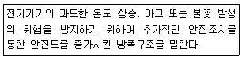
- 내압방폭구조
- 유입방폭구조
- 안전증방폭구조
- 본질안전방폭구조
(정답률: 76%)
62. 근로자가 활선작업용 기구를 사용하여 작업할 경우 근로자의 신체 등과 충전전로 사이의 사용전압별 접근한계거리가 틀린 것은?
- 15kV 초과 37kV 이하:80cm
- 37kV 초과 88kV 이하:110cm
- 121kV 초과 145kV 이하:150cm
- 242kV 초과 362kV 이하:380cm
(정답률: 52%)
63. 정전기 제거방법으로 가장 거리가 먼 것은?
- 설비 주위를 가습한다.
- 설비의 금속 부분을 접지한다.
- 설비의 주변에 적외선을 조사한다.
- 정전기 발생 방지 도장을 실시한다.
(정답률: 75%)
64. 활선작업시 사용하는 안전장구가 아닌 것은?
- 절연용 보호구
- 절연용 방호구
- 활선작업용 기구
- 절연저항 측정기구
(정답률: 67%)
65. 정상운전 중의 전기설비가 점화원으로 작용하지 않는 것은?
- 변압기 권선
- 개폐기 접점
- 직류 전동기의 정류자
- 건선형 전동기의 슬립링
(정답률: 52%)
66. 인체가 전격을 당했을 경우 통전시간이 1초라면 심실세동을 일으키는 전류값(mA)은? (단, 심실세동전류값은 Dalziel의 관계식을 이용한다.)
- 100
- 165
- 180
- 215
(정답률: 60%)
67. 건설현장에서 사용하는 임시배선의 안전대책으로 거리가 먼 것은?
- 모든 전기기기의 외합은 접지시켜야 한다.
- 임시배선은 다심케이블을 사용하지 않아도 된다.
- 배선은 반드시 분전반 또는 배전반에서 인출해야 한다.
- 지상 등에서 금속판으로 방호할 때는 그 금속관을 접지해야 한다.
(정답률: 69%)
68. 제1종 또는 제2종 접지공사에 사용하는 접지선에 사람이 접촉할 우려가 있는 경우 접지공사 방법으로 틀린 것은?
- 접지극은 지하 75cm 이상 깊이에 묻을 것
- 접지선을 시설한 지지물에는 피뢰침용 지선을 시설하지 않을 것
- 접지선은 캡타이어케이블, 절연전선 또는 통신용 케이블 이외의 케이블을 사용할 것
- 지하 60cm부터 지표위 1.5m 까지의 부분은 접지선은 합성수지관 또는 몰드로 덮을 것
(정답률: 48%)
69. 전기화재의 원인을 직접원인과 간접원인으로 구분할 때, 직접원인과 거리가 먼 것은?
- 애자의 오손
- 과전류
- 누전
- 절연열화
(정답률: 72%)
70. 정전기의 발생에 영향을 주는 요인과 가장 거리가 먼 것은?
- 박리속도
- 물체의 표면상태
- 접촉면적 및 압력
- 외부공기의 풍속
(정답률: 76%)
71. 알루미늄 금속분말에 대한 설명으로 틀린 것은?
- 분질폭발의 위험성이 있다.
- 연소 시 열을 발생한다.
- 분진폭발을 방지하기 위해 물속에 저장한다.
- 염산과 반응하여 수소가스를 발생한다.
(정답률: 76%)
72. 다음 중 가연성가스가 아닌 것은?
- 이산화탄소
- 수소
- 메탄
- 아세틸렌
(정답률: 76%)
73. 다음 중 벤젠(C6H6)이 공기 중에서 연소될 때의 이론혼합비(화학양론조성)는?
- 0.72vol%
- 1.222vol%
- 2.722vol%
- 3.222vol%
(정답률: 52%)
74. 다음은 산업안전보건법령상 파열판 및 안전밸브의 직렬설치에 관한 내용이다. ()에 알맞은 용어는?
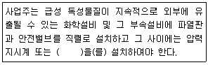
- 자동경보장치
- 차단장치
- 플레어헤드
- 콕
(정답률: 71%)
75. 산업안전보건법령상 용해아세틸렌의 가스집합용접장치의 배관 및 부속기구에는 구리나 구리 함유량이 몇 퍼센트 이상인 합금을 사용할 수 없는가?
- 40
- 50
- 60
- 70
(정답률: 47%)
76. 다음 중 분진 폭발의 발생 위험성을 낮추는 방법으로 적절하지 않은 것은?
- 주변의 점화원을 제거한다.
- 분진이 날리지 않도록 한다.
- 분진과 그 주변의 온도를 낮춘다.
- 분진 입자의 표면적을 크게 한다.
(정답률: 76%)
77. 유해ㆍ위험물질 취급 시 보호구로서 구비조건이 아닌 것은?
- 방호성능이 충분할 것
- 재료의 품질이 양호할 것
- 작업에 방해가 되지 않을 것
- 외관이 화려할 것
(정답률: 81%)
78. 공기 중에 3ppm이 디메틸아민(demethylaminem TLV-TWA:10ppm)과 20ppm의 시클로핵산을 (cyclohexanol, TLV-TWA:50ppm)이 있고, 10ppm의 산화프로필렌(propyleneoxide, TLV-TWA:20ppm)이 존재한다면 혼합 TLV-TWA 몇 ppm인가?
- 12.5
- 22.5
- 27.5
- 32.5
(정답률: 46%)
79. 건조설비의 사용에 있어 500~800℃ 범위의 온도에 가열된 스테인리스강에서 주로 일어나며, 탄화크롬이 형성되었을 때 결정경계면의 크롬함유량이 감소하여 발생되는 부식형태는?
- 전면부식
- 층상부식
- 입계부식
- 격간부식
(정답률: 64%)
80. 위험물안전관리법령상 칼륨에 의한 화재에 적응성이 있는 것은?
- 건조사(마른모래)
- 포소화기
- 이산화탄소소화기
- 할로겐화합물소화기
(정답률: 65%)
5과목: 건설안전기술
81. 흙막이 가시설의 버팀대(Strut)의 변형을 측정하는 계측기에 해당하는 것은?
- Water level meter
- Strain gauge
- Piezometer
- Load cell
(정답률: 62%)
82. 사다리식 통로 등을 설치하는 경우 준수해야 할 기준으로 옳지 않은 것은?
- 접이식 사다리 기둥은 사용 시 접혀지거나 펼쳐지지 않도록 철물 등을 사용하여 견고하게 조치할 것
- 발판과 벽과의 사이는 25cm 이상의 간격을 유지할 것
- 폭은 30cm 이상으로 할 것
- 사다리식 통로의 길이가 10m 이상인 경우에는 5m 이내마다 계단참을 설치할 것
(정답률: 59%)
83. 추락방지망의 달기로프를 지지점에 부착할 때 지지점의 간격이 1.5m인 경우 지지점의 강도는 최소 얼마 이상이어야 하는가?
- 200kg
- 300kg
- 400kg
- 500kg
(정답률: 62%)
84. 가설통로를 설치하는 경우 준수해야 할 기준으로 옳지 않은 것은?
- 경사는 45° 이하로 할 것
- 경사가 15°를 초과하는 경우에는 미끄러지지 아니하는 구조로 할 것
- 추락할 위험이 있는 장소에는 안전난간을 설치할 것
- 수직갱에 가설된 통로의 길이가 15m 이상인 경우에는 10m 이내마다 계단참을 설치할 것
(정답률: 75%)
85. 유해위험방지계획서를 제출해야 하는 공사의 기준으로 옳지 않은 것은?
- 최대 지간길이 30m 이상인 교량 건설등 공사
- 깊이 10m 이상인 굴착공사
- 터널 건설등의 공사
- 다목적댐, 발전용댐 및 저수용량 2천만톤 이상의 용수 전용 댐, 지방상수도 전용 댐 건설 등의 공사
(정답률: 68%)
86. 굴착이 곤란한 경우 발파가 어려운 암석의 파쇄굴착 또는 암석제거에 적합한 장비는?
- 리퍼
- 스크레이퍼
- 롤러
- 드래그라인
(정답률: 63%)
87. 중량물의 취급작업 시 근로자의 위험을 방지하기 위하여 사전에 작성하여야 하는 작업계획서 내용에 해당되지 않는 것은?
- 추락위험을 예방할 수 있는 안전대책
- 낙하위험을 예방할 수 있는 안전대책
- 전도위험을 예방할 수 있는 안전대책
- 침수위험을 예방할 수 있는 안전대책
(정답률: 74%)
88. 콘크리트 타설용 거푸집에 작용하는 외력 중 연직방향 하중이 아닌 것은?
- 고정하중
- 충격하중
- 작업하중
- 풍하중
(정답률: 77%)
89. 화물을 적재하는 경우에 준수하여야 하는 사항으로 옳지 않은 것은?
- 침하 우려가 없는 튼튼한 기반 위에 적재할 것
- 건물의 칸막이나 벽 등이 화물의 압력에 견딜 만큼의 강도를 지니지 아니한 경우에는 칸막이나 벽에 기대어 적재하지 않도록 할 것
- 불안정할 정도로 높이 쌓아 올리지 말 것
- 편하중이 발생하도록 쌓아 적재효율을 높일 것
(정답률: 80%)
90. 핸드 브레이커 취급 시 안전에 관한 유의사항으로 옳지 않은 것은?
- 기본적으로 현장 정리가 잘되어 있어야 한다.
- 작업 자세는 항상 하향 45°방향으로 유지하여야 한다.
- 작업 전 기계에 대한 점검을 철저히 한다.
- 호스의 교차 및 꼬임여부를 점검하여야 한다.
(정답률: 78%)
91. 유한사면에서 사면기울기가 비교적 완만한 점성토에서 주로 발생되는 사면파괴의 형태는?
- 저부파괴
- 사면선단파괴
- 사면내파괴
- 국부전단파괴
(정답률: 38%)
92. 산업안전보건관리비 중 안전시설비 등의 항목에서 사용가능한 내역은?
- 외부인 출입금지, 공사장 경계표시를 위한 가설울타리
- 비계ㆍ통로ㆍ계단에 추가 설치하는 추락방지용 안전난간
- 절토부 및 성토부 등의 토사유실 방지를 위한 살비
- 공사 목적물의 품질 확보 또는 건설장비 자체의 운행 감시, 공사 진척상황 확인, 방범 등의 목적을 가진 CCTV 등 감시용 장비
(정답률: 64%)
93. 추락방지용 방망을 구성하는 그물코의 모양과 크기로 옳은 것은?
- 원형 또는 사각으로서 그 크기는 10cm 이하이어야 한다.
- 원형 또는 사각으로서 그 크기는 20cm 이하이어야 한다.
- 사각 또는 마름모로서 그 크기는 10cm 이하이어야 한다.
- 사각 또는 마름모로서 그 크기는 20cm 이하이어야 한다.
(정답률: 70%)
94. 지반조사의 방법 중 지반을 강관으로 천공하고 토사를 채취 후 여러 가지 시험을 시행하여 지반의 토질 분포, 흙의 층상과 구성 등을 알 수 있는 것은?
- 보링
- 표준관입시험
- 베인테스트
- 평판재하시험
(정답률: 51%)
95. 말비계를 조립하여 사용하는 경우의 준수사항으로 옳지 않은 것은?
- 지주부재의 하단에는 미끄럼 방지장치를 할 것
- 지주부재와 수평면과의 기울기는 85°이하로 할 것
- 말비계의 높이가 2m를 초과할 경우에는 작업발판의 폭을 40cm 이상으로 할 것
- 지주부재와 지주부재 사이를 고정시키는 보조부재를 설치할 것
(정답률: 72%)
96. 철골작업을 중지하여야 하는 제한 기준에 해당되지 않는 것은?
- 풍속이 초당 10m 이상인 경우
- 강우량이 시간당 1mm 이상인 경우
- 강설량이 시간당 1cm 이상인 경우
- 소음이 65dB 이상인 경우
(정답률: 77%)
97. 강관틀비계의 높이가 20m를 초과하는 경우 주틀간의 간격을 최대 얼마 이하로 사용해야 하는가?
- 1.0m
- 1.5m
- 1.8m
- 2.0m
(정답률: 39%)
98. 철골공사에서 용접작업을 실시함에 있어 전격예방을 위한 안전조치 중 옳지 않은 것은?
- 전격방지를 위해 자동전격방지기를 설치한다.
- 우천, 강설시에는 야외작업을 중단한다.
- 개로 전압이 낮은 교류 용접기는 사용하지 않는다.
- 절연 홀더(Holder)를 사용한다.
(정답률: 76%)
99. 타워크레인의 운전작업을 중지하여야 하는 순간풍속기준으로 옳은 것은?
- 초당 10m 초과
- 초당 12m 초과
- 초당 15m 초과
- 초당 20m 초과
(정답률: 62%)
100. 흙막이지보공을 설치하였을 때 정기적으로 점검하고 이상을 발견하면 즉시 보수하여야 하는 사항으로 거리가 먼 것은?
- 부재의 손상, 변형, 부식, 변위 및 탈락의 유무와 상태
- 부재의 접속부, 부착부 및 교차부의 상태
- 침하의 정도
- 발판의 지지 상태
(정답률: 45%)